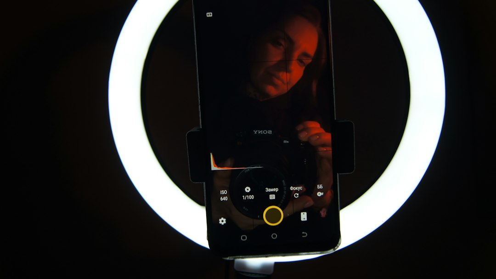

Come Vision UGC Rivoluziona la Creazione di Contenuti Video per E-Commerce e Marketing Digitale

Come Vision UGC sta trasformando la produzione video UGC per E-Commerce Manager, Media Buyer, Brand e Agenzie di Marketing
- Il settore e-commerce si trova di fronte a sfide strategiche legate ai contenuti video user-generated, tradizionalmente costosi e lenti da produrre.
- Le conseguenze operative includono budget intaccati e ritardi che compromettono l’efficacia delle campagne di marketing digitale.
- Vision UGC di RM Studio propone una soluzione innovativa: attori digitali iper-realistici e video personalizzati in 24 ore, ottimizzando tempi e costi senza rinunciare alla qualità.
Analisi approfondita della notizia e delle implicazioni operative
Il mercato dell’e-commerce è in piena espansione e con esso la domanda di contenuti video authentici, cioè User Generated Content (UGC). Questi video sono fondamentali per migliorare la conversione nei funnel di vendita e accrescere la fiducia nei brand. Tuttavia, il modello tradizionale di produzione video UGC si basa su creator umani, che comportano costi elevati, tempi di spedizione di prodotti per prova e una resa qualitativa spesso incostante. In questo scenario, le aziende e le agenzie di marketing si trovano ad affrontare continue sfide per garantire contenuti efficaci, rapidi e coerenti con la strategia digitale, soprattutto nei mercati altamente competitivi e dinamici.
La diffusione dei video social verticali e l’esigenza di adattarsi a formati dinamici e narrazioni genuine hanno ulteriormente amplificato la pressione sui team creativi e di media buying. Il risultato è un incremento dei costi operativi e un aumento dei tempi di produzione, che limita la capacità di sperimentare contenuti freschi e performanti durante campagne stagionali o flash sales.
Le conseguenze e i costi di non agire
Non affrontare il nodo del costo e della velocità del video UGC significa incorrere in una serie di svantaggi strategici e operativi. Innanzitutto, i budget marketing vengono erosi significativamente dalla necessità di remunerare creator umani, spesso sotto contratti onerosi o con fee a progetto, senza assicurarsi un rendimento immediato sull’investimento. Inoltre, il processo di spedizione dei campioni fisici ai creator può richiedere diverse settimane, rallentando l’intero ciclo di deployment dei contenuti sui canali social e di advertising.
Un ulteriore dilemma è rappresentato dalla qualità e dall’efficacia dei video stessi: molte volte si riscontrano risultati inferiori alle aspettative, con messaggi meno persuasivi e una bassa conversione, aggravando il problema del ritorno sull’investimento. Il rischio più grande per E-Commerce Manager, Media Buyer, Brand e Agenzie di Marketing è perdere margine competitivo verso chi investe in tecnologie innovative capaci di agilizzare e ottimizzare la creazione di contenuti digitali.
Come Vision UGC risolve il problema
RM Studio risponde a queste sfide con Vision UGC, una piattaforma SaaS innovativa che sfrutta la generazione di attori e modelle digitali hyper-realistiche grazie alla tecnologia Seedance 2.0. Questa soluzione consente di creare video UGC in sole 24 ore, a partire da un semplice link prodotto, con una dizione perfetta e performante per i canali social e advertising digitali.
La piattaforma elimina i costi esorbitanti legati ai creator umani e azzera i tempi di spedizione di campioni, integrando nell’ecosistema digitale un flusso di produzione agile, scalabile e ottimizzato per i risultati. Grazie a Vision UGC, i team di marketing possono testare rapidamente tre ganci creativi con il Pro Bundle, ad un prezzo competitivo (€120), o partire con un progetto base con lo Starter Pack a soli €50, abbassando significativamente la soglia di investimento per contenuti di alta qualità.
La capacità di generare contenuti perfettamente ottimizzati per i formati verticali, con look contemporaneo e coinvolgente, rende Vision UGC una soluzione naturale per Brand, Media Buyer e agenzie che vogliono massimizzare il ROI di campagne digitali sempre più sofisticate. Il contenuto digitale diventa così più dinamico, personalizzabile e in linea con le aspettative dei consumatori online, senza compromessi sulla coerenza e sull’identità di marca.
| Gestione Tradizionale | Con Vision UGC |
|---|---|
| Costi elevati per creator umani | Costi contenuti con attori digitali virtuali |
| Settimane per spedire e ricevere campioni | Nessuna spedizione, contenuti generati in 24h |
| Qualità video non sempre costante | Video UGC iper-realistici e di qualità premium |
| Limitata sperimentazione creativa | Test rapido di più versioni creative |
| Rischio di ritardi nelle campagne | Produzione rapida senza bottleneck operativi |
💡 Ti è stato utile questo approfondimento?
Condividilo con un collega o un amico del settore E-Commerce Manager, Media Buyer, Brand e Agenzie di Marketing a cui potrebbe interessare!
FAQ - Domande frequenti per E-Commerce Manager, Media Buyer, Brand e Agenzie di Marketing
1. Quanto tempo occorre per ricevere un video UGC con Vision UGC?
Con Vision UGC, i video vengono generati e consegnati in 24 ore lavorative, riducendo drasticamente i tempi rispetto alla produzione tradizionale.
2. Quali sono i vantaggi principali degli attori digitali Seedance 2.0?
Gli attori digitali garantiscono una rappresentazione visiva iper-realistica, personalizzata per ogni esigenza, con dizione perfetta e la possibilità di testare molteplici creatività senza costi aggiuntivi legati a shooting reali.
3. È possibile integrare Vision UGC nei workflow delle campagne marketing esistenti?
Sì, Vision UGC è progettato per integrarsi facilmente con le piattaforme di advertising e i tool di gestione contenuti, semplificando la produzione e distribuzione dei video UGC nei canali social e e-commerce.
Inizia Subito
Starter Pack a €50 o Pro Bundle (3 ganci creativi) a €120.
Fonti Ufficiali e Risorse Esterne
Scopri l'Intelligenza Artificiale per la tua attività
Ottimizza i processi e aumenta le vendite con le soluzioni B2B di RM Studio.
Scopri Vision UGC